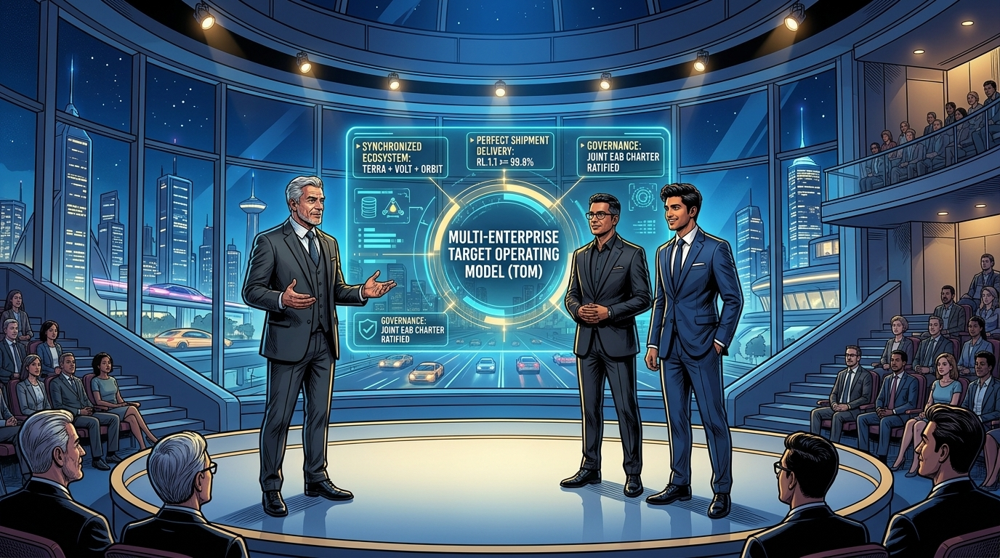
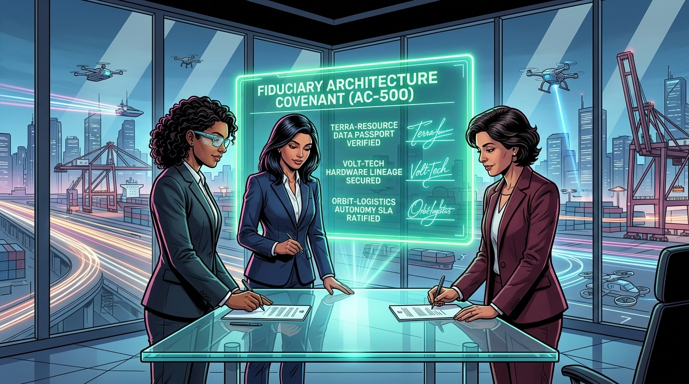
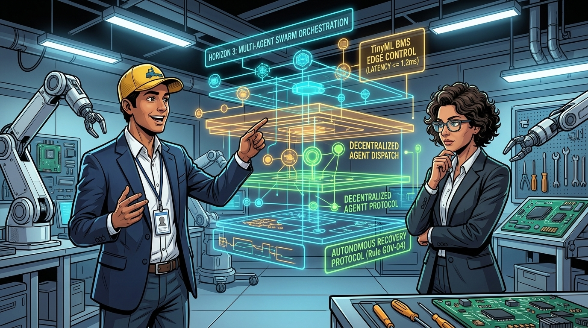
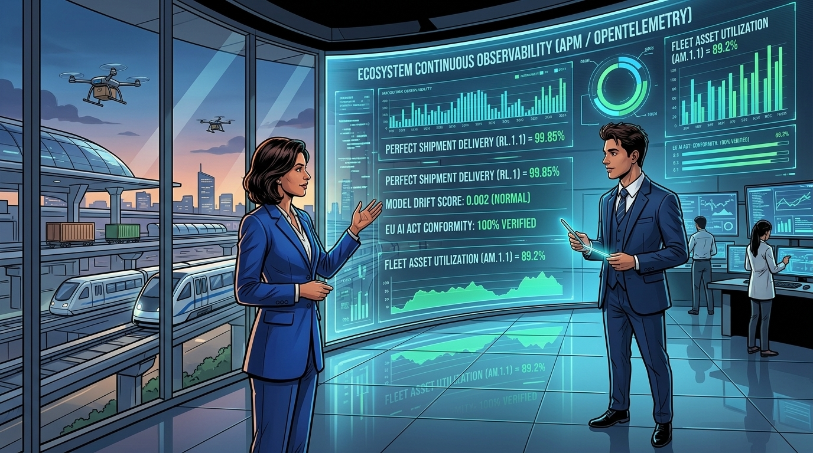
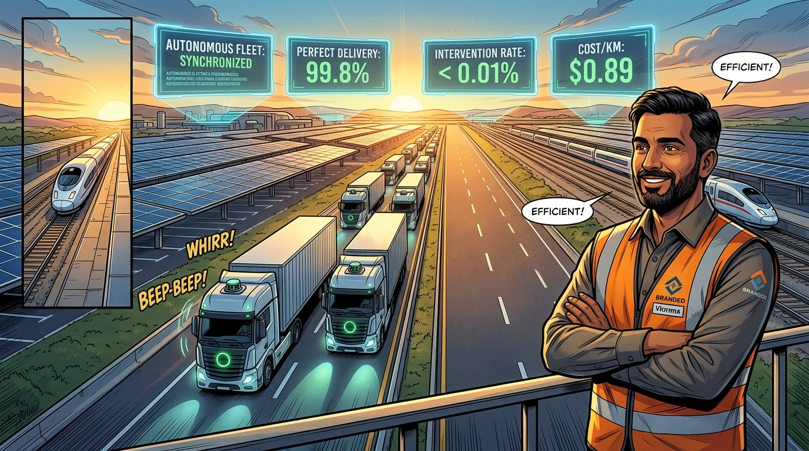
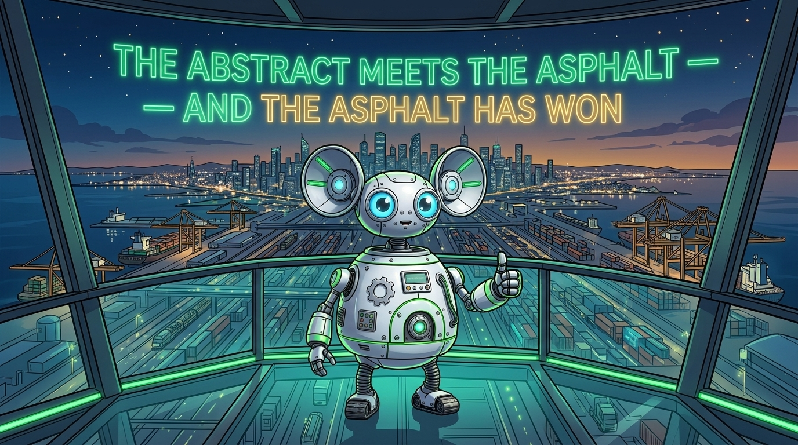
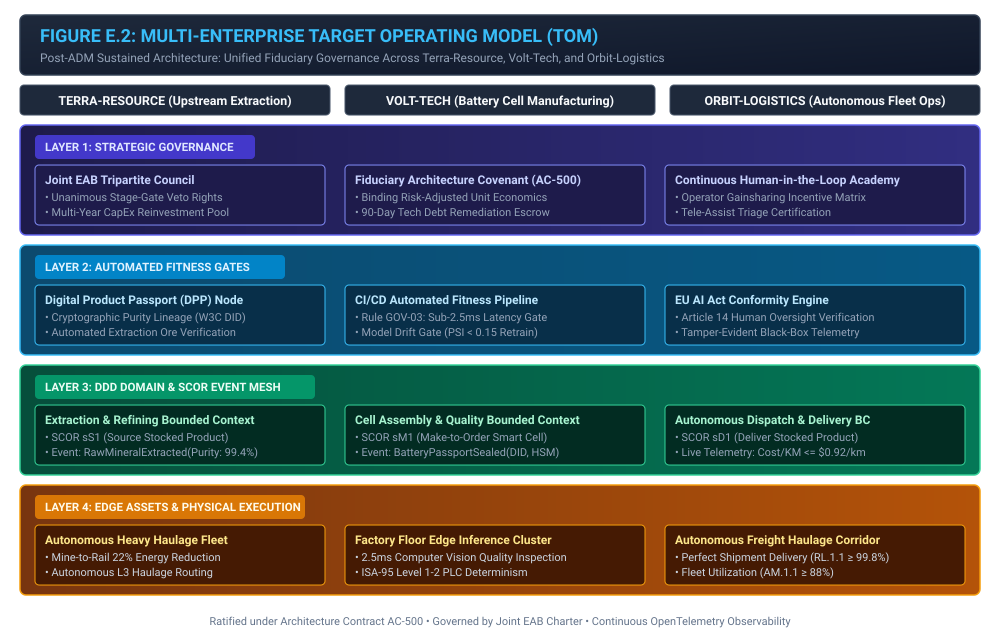
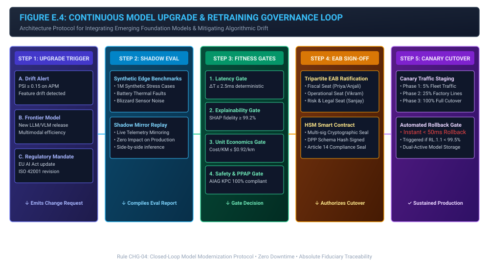

Epilogue: The Roadmap to Sustained Intelligence
Multi-Enterprise Synthesis, Target Operating Model & Long-Term Governance Covenants

"We arrive at the final act of our boardroom narrative. In the summit auditorium, all nine leaders from Terra-Resource, Volt-Tech, and Orbit-Logistics sit together around a shared round table. The Smart Battery is rolling off the lines, the data passports are cryptographically verified, and the autonomous fleets are operating at peak efficiency under live APM supervision. But enterprise technology never stands still. Let us watch how they future-proof their enterprise architecture and establish the roadmap to sustained intelligence."
The Storyline: The Unified Ecosystem Summit







"My work here is complete. You have witnessed the full transformation: from the $50 million diagnostic crisis in the command center (Chapter 2), through the boardroom battles (Chapter 3), the factory robotics integration (Chapter 6), the migration sequencing (Chapter 8), the regulatory governance gates (Chapter 9), the workforce transformation (Chapter 10), and finally to this unified summit. Remember the core lesson of this narrative: AI is not an IT experiment. It is a strict fiduciary responsibility. Now, let us examine how you can apply this architecture to lead your own enterprise into the future."
1. How to Use This Enterprise Architecture to Move Forward
Enterprise AI initiatives fail when organizations treat machine learning models as isolated software projects. The core contribution of this narrative is the Unified 4-Tier Enterprise AI Operating Model, combining:
- TOGAF® ADM: Providing lifecycle governance, stage-gate veto power, and continuous architecture change management.
- Domain-Driven Design (DDD): Providing bounded contexts, ubiquitous languages, and context maps that prevent multi-tier enterprise systems from devolving into tangled monoliths.
- SCOR (Supply Chain Operations Reference): Anchoring algorithmic decisions to non-negotiable operational KPIs (RL.1.1, RS.1.1, AG.1.1, CO.1.1, AM.1.1).
- ISA-95 & AIAG: Enforcing deterministic sub-millisecond edge execution and automotive quality controls (PPAP, Control Plans) on the physical factory floor.
To apply this architecture to future technology shifts—such as generative agents, multimodal foundation models, or spatial digital twins—enterprise leaders must operationalize the Target Operating Model (TOM) depicted in Figure E.2.

Executive Playbook: The 5-Step Forwarding Protocol
- Step 1 (Establish Fiduciary Ground Truth): Never launch an AI pilot without defining its Risk-Adjusted Unit Economics formula and baseline Failure Taxonomy (Chapter 2 & 4).
- Step 2 (Isolate Data at the Ore Face): Eliminate dirty data upstream by enforcing Digital Product Passports and Canonical Schemas before ingestion (Chapter 5).
- Step 3 (Enforce Sub-2.5ms Edge Determinism): Never place high-latency cloud models in safety-critical manufacturing or transit loops (Chapter 6).
- Step 4 (Automate Fitness Functions in CI/CD): Codify regulatory and latency compliance into automated build pipelines that automatically fail non-conforming models (Chapter 9).
- Step 5 (Realign Workforce Incentives): Defuse cultural friction by converting operators into frontline AI evaluators backed by real-time gainsharing (Chapter 10).
2. Multi-Year AI Architecture Evolution Roadmap
Enterprise AI is not an end-state; it is a multi-year capability horizon. To prevent architectural obsolescence, leadership must execute against a structured 3-Horizon Transformation Roadmap:

Horizon Breakdown & Capability Milestones
| Horizon | Timeline | Primary Architectural Focus | Target SCOR Benchmark | Stage-Gate Exit Metric |
|---|---|---|---|---|
| Horizon 1: Foundation | Months 1–12 | Data lineage bedrock, DPP implementation, sub-2.5ms edge vision, APM telemetry ingestion, HITL academy. | \(\text{CO.1.1} \le \$0.92/\text{km}\), Scrap \(\le 0.4\%\) | Unanimous EAB Gate 3 Production Cutover sign-off. |
| Horizon 2: Synchronization | Months 13–24 | Cross-enterprise smart contracts, dynamic dispatch, shadow evaluation pipelines, automated compliance audits. | \(\text{RL.1.1} \ge 99.8\%\), \(\text{AG.1.1} \ge 20\%\) | Zero-dispute ERP billing; 100% EU AI Act automated conformity. |
| Horizon 3: Autonomous Swarms | Months 25–48 | Decentralized multi-agent swarms, self-healing supply meshes, spatial digital twins, compounded capital reinvestment. | \(\text{AM.1.1} \ge 88\%\), \(\text{RS.1.1} \le 1.5\text{ hrs}\) | Self-organizing autonomous dispatch across 100% of routes. |
The mathematical formulation for multi-year compounding economic return under this architecture is defined as:
\[ \text{ROI}_{\text{compounded}}(T) = \frac{\sum_{t=1}^{T} \frac{\Delta \text{OpEx}_t + \Delta \text{Penalty}_t + \text{Gainshare}_t}{(1 + r)^t} - \text{Escrow}_{\text{TechDebt}}}{\sum_{t=1}^{T} \frac{\text{CapEx}_t}{(1 + r)^t}} \]Where \(r\) is the enterprise discount rate (\(8.5\%\)), \(\Delta \text{OpEx}_t\) represents operational cost reductions verified by APM telemetry, \(\Delta \text{Penalty}_t\) represents eliminated regulatory and SLA breach fines, and \(\text{Escrow}_{\text{TechDebt}}\) represents capital set aside to remediate approved variances within 90 days.
3. Closed-Loop Foundation Model Modernization Protocol
A fatal error in modern enterprise architectures is treating AI models as permanent assets. Frontier foundation models evolve on a 6-month cycle. Under Rule CHG-04 (Continuous Model Modernization Protocol), the enterprise executes a 5-step automated validation and cutover loop:

The Automated Drift Trigger Formula
Model retraining is triggered automatically when the Population Stability Index (\(\text{PSI}\)) exceeds the safety threshold of \(0.15\):
\[ \text{PSI} = \sum_{b=1}^{B} \left( P_{\text{actual}}(b) - P_{\text{expected}}(b) \right) \times \ln\left( \frac{P_{\text{actual}}(b)}{P_{\text{expected}}(b)} \right) \ge 0.15 \]When \(\text{PSI} \ge 0.15\), the CI/CD pipeline immediately launches a shadow container running 1,000,000 synthetic edge cases. Only if the candidate model maintains sub-\(2.5\text{ms}\) latency, local surrogate explanation fidelity \(R^2 \ge 0.95\), Shapley attribution coverage \(\ge 95\%\), and positive unit economics does the EAB issue a cryptographic deployment token.
4. The Ratified Fiduciary Architecture Covenant (AC-500)
At the conclusion of the summit, executive leaders from all three companies ratified Architecture Contract AC-500, enshrining five permanent covenants across the Smart Mobility Ecosystem:
Covenant 1: The Anti-Obfuscation Mandate
No machine learning system may be placed in a production decision path unless its outputs can be decomposed into human-interpretable feature attributions with local explanation fidelity (\(R^2 \ge 0.95\)) and Shapley attribution coverage (\(\ge 95\%\)) audited under EU AI Act Article 14.
Covenant 2: Cryptographic Data Lineage
All physical components must carry a tamper-evident Digital Product Passport (DPP) anchored to W3C Decentralized Identifiers, guaranteeing purity and provenance before downstream ingestion.
Covenant 3: Deterministic Edge Priority
Physical control loops (ISA-95 Level 1–2 and vehicle safety buses) must never depend on non-deterministic cloud connections. Edge models must execute locally within \(\Delta T \le 2.5\text{ms}\).
Covenant 4: Augmented Human Agency
Technology must elevate rather than replace human workers. Workforce retraining academies and direct telemetry gainsharing are mandatory prerequisites for production deployment.
5. Ecosystem Performance Horizons & Financial Compounding
The success of the transformation is demonstrated across both operational SCOR benchmarks and multi-year financial returns. Figure E.1 contrasts the fragile pre-transformation baseline against the governed mastery achieved across the ecosystem, while Figure E.5 tracks the net economic compounding return.